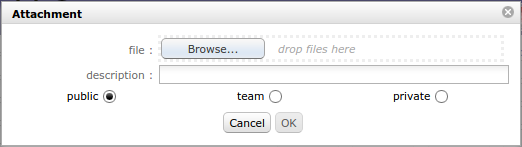

Common sections¶
Some sections are displayed on almost all screens.
Those sections allows to set information or add information to an item of the element.
Description section¶
This section allows to identify items of the element.
- Information grouped under this section are:
- Id
- Element type
- Name
- Description
- Current situation
- Stakeholder
- Objective
- Reference
- Link
Treatment section¶
This section contains information about item treatment.
Depending on the element, this section may have a different name.
- Information grouped under this section are:
- Status and Dates
- Responsible
- Link
- Outcome
- Comment
Affectations section¶
This section allows to manage project affectations.
| Field | Description |
|---|---|
| Id | Unique Id for the affectation. |
| Project | Project affected to. |
| Resource | Name of the affected resource. |
| Profile | Selected profile. |
| Start date | Start date of affectation. |
| End date | End date of affectation. |
| Rate | Affectation rate for the project (%). |
Fields: Project & Resource
Affectation list management
- Click on
 to create a new affectation.
to create a new affectation. - Click on
 to update an existing affectation.
to update an existing affectation. - Click on
 to delete the corresponding affectation.
to delete the corresponding affectation.
Affectation dialog box
| Field | Description |
|---|---|
| Project | Project list. |
| Resource | Resource list. |
| Profile | Profile list. |
| Rate | Rate (in %) of the affectation to the project. |
| Start date | Start date of affectation. |
| End date | End date of affectation. |
| Closed | Flag to indicate that affectation in not active anymore, without deleting it. |
* Required field
Field: Resource
- This field can contain a list of users, resources or contacts according to which screen comes from project affectation.
Field: Profile
- The user profile defined will be displayed first.
- If the profile field is not available, the profile defined for each resource will be selected.
Field: Rate
- 100% means a full time affectation.
Note
- Depending on which screen is used to manage project affectations, the behavior of fields will change.
Linked Elements section¶
This section allows to manage link between items of elements.
| Field | Description |
|---|---|
| Element | Type and id of the linked element. |
| Name | Name of the linked element. |
| Date | Date of creation of the link. |
| User | User who created the link. |
| Status | Actual status of the linked element. |
Used for
Allows to associate items on different elements in the same project.
A project can be linked with other.
Click on an item name to directly move to it.
Note
- Click on
 to return to the last screen. (More detail, see: Top bar)
to return to the last screen. (More detail, see: Top bar)
- Click on
Reciprocally interrelated
- If Item A is linked to Item B, Item B is automatically linked to Item A.
Note
- A link between items has no impact on them treatment.
Linked elements management
- Click to create a new link.
- Click on to delete the corresponding link.
Add a link with element dialog box
Link with Document
- Click on
 to download the file of document.
to download the file of document.
Specified version
- A link with a document element offer the possibility to select a specific version.
- A direct link to version of the document is created.
Not specified version
- If the version is not specified, the last version will be selected.
- The download will transfer always the last version of the document.
Attachments section¶
This section allows to attach files or hyperlinks to items of elements.
| Field | Description |
|---|---|
| Id | Unique Id for the attachment. |
| File | File name or hyperlink. |
| Date | Date of creation of the attachment. |
| User | User who created the attachment. |
Select an attachment
- Select an attachment depends on whether is a file or a hyperlink.
- Click on to download attachment file.
- Click on to access to hyperlink.
- Click on
 to view the PDF file online.
to view the PDF file online.
- Click on
Delete an attachment
- Click on to delete an attachment.
Add an attachment
- Click on to add an attachment file to an item.
- Dialog box “Attachment file” will be displayed.
- Click on to add hyperlink to an item.
- Dialog box “Hyperlink” will be displayed.
Attachment file
Note
To upload a file
- Select file with “Browse” button or drop the file in “drop files here” area.
- Attached files are stored on server side.
- Attachments directory is defined in Global parameters screen.
Attachment file dialog box
Hyperlink
Note
Hyperlink
- Enter hyperlink in «Hyperlink» field.

Hyperlink dialog box
| Field | Description |
|---|---|
| Description | Description of attachment. |
| Public | Attachment is visible to anyone. |
| Team | Attachment is visible to every member of the creator’s team. |
| Private | Attachment is visible only to the creator. |
Notes section¶
This section allows to add notes on items of elements.
Notes are comments, that can be shared to track some information or progress.
| Field | Description |
|---|---|
| Id | Unique Id for the note. |
| Note | Text of the note. |
| Date | Date of creation or modification of the note. |
| User | Name of the user who created the note. |
Predefined note
- The list of values appears whether a predefined note exists for an element or an element type.
- Selecting a predefined note will automatically fill in the note text field.
- Predefined notes are defined in Predefined notes screen.
Note visibility
- Public: Visible to anyone.
- Team: Visible to every member of the creator’s team.
- Private: Visible only to the creator.
Notes list management
- Click on to add a note to an item.
- Click on to edit the note.
- Click on to delete the note.

Note dialog box